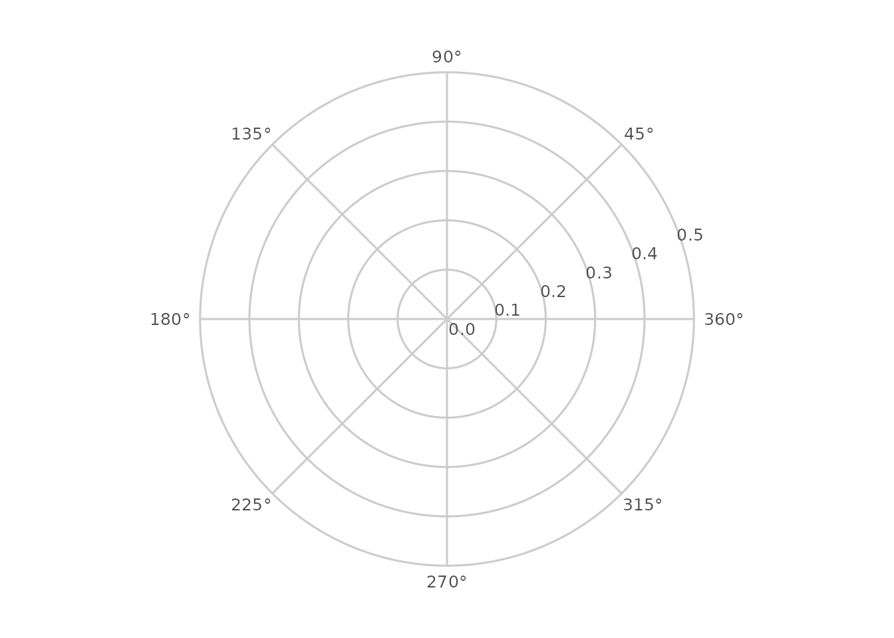
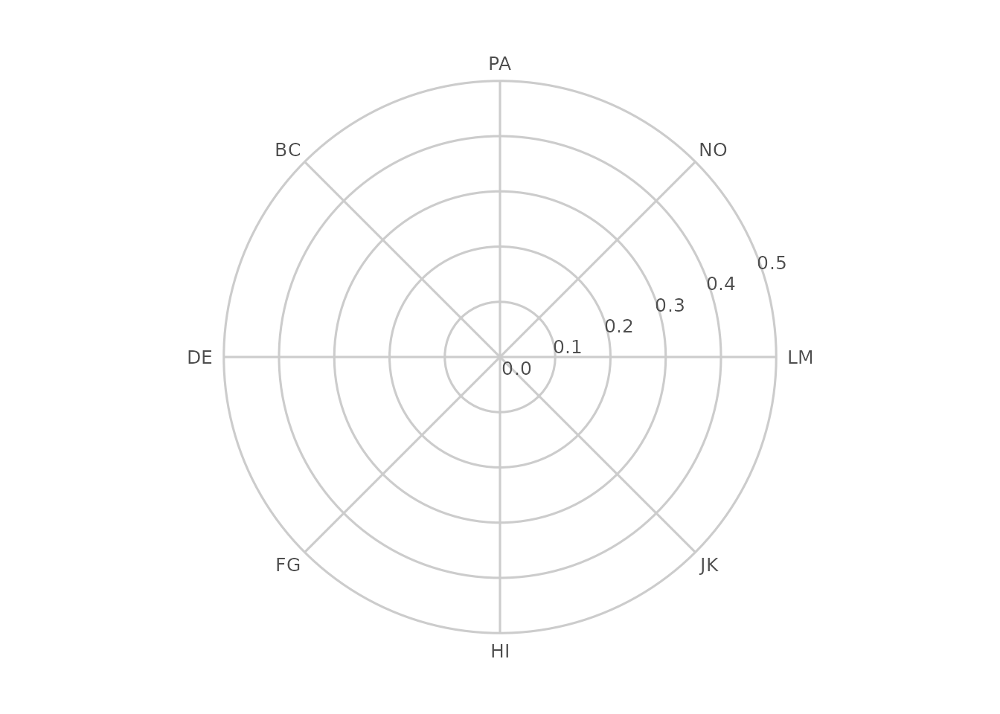
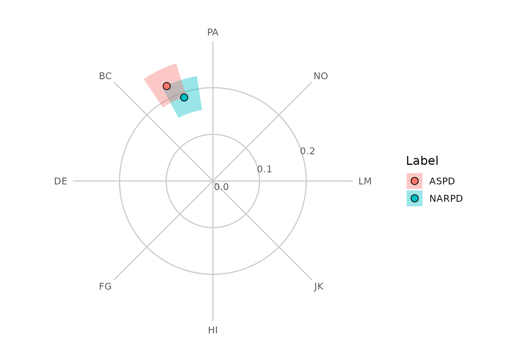
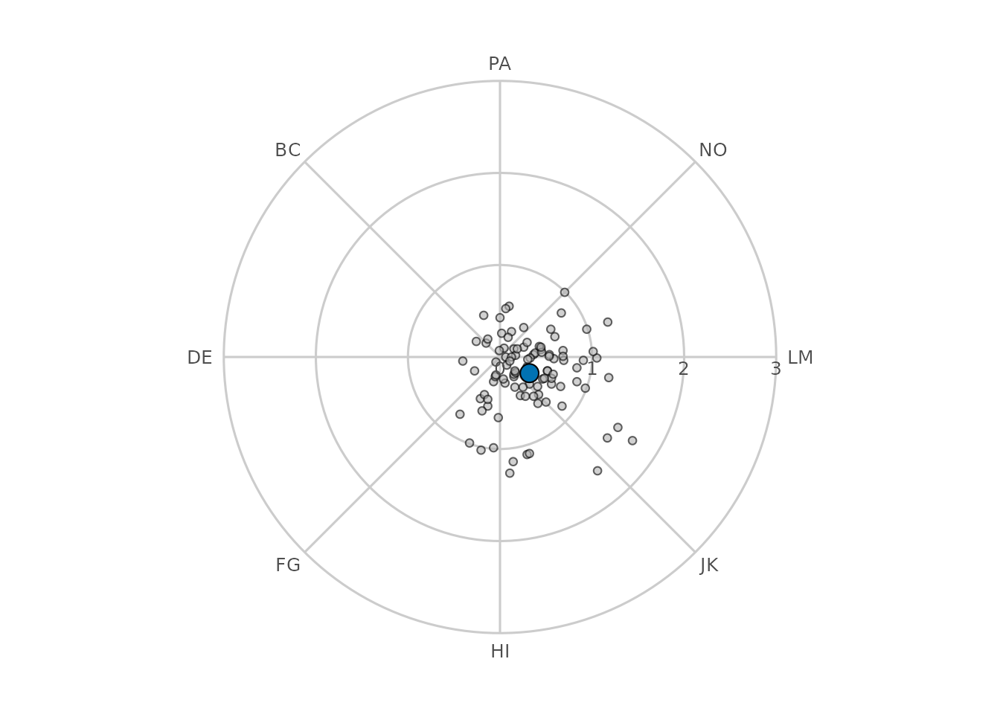
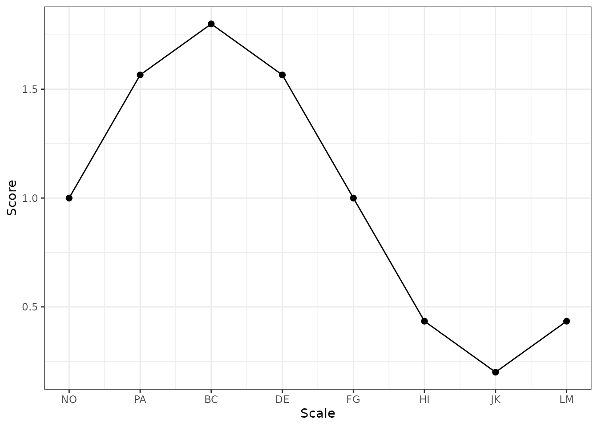

Advanced Circumplex Visualization
Source:vignettes/advanced-visualization.Rmd
advanced-visualization.RmdBeyond the built-in plots
The ssm_plot_circle(), ssm_plot_curve(),
and ssm_plot_contrast() functions cover the most common
circumplex figures, but they each produce a finished plot with a fixed
set of layers. Sometimes you want more control: to overlay individual
respondents on a group profile, to annotate a specific region of the
circle, to restyle the points, or to place several circumplex panels
side by side.
To make that possible, circumplex exposes the building
blocks that the built-in plots are themselves made of. These are
ordinary ggplot2
components, so you compose them with + and combine them
freely with any other ggplot2 layers, scales, and
themes:
-
ggcircumplex()draws the empty circular canvas (amplitude rings, displacement spokes, and scale labels). -
geom_ssm_point()andgeom_ssm_arc()are polar-native layers that place profile points and their confidence regions in the circle, taking amplitude and displacement directly as aesthetics. -
scale_x_circumplex()is a scale for the angle axis of linear circumplex plots (such as the score-by-angle curve).
This vignette works through each of these and then combines them.
The circular canvas
ggcircumplex() returns a ggplot2 object
containing just the circular backdrop, with no data drawn on it yet. By
default it uses octant scales labeled by their angular position in
degrees:

You can label the scales however you like. Passing a character vector labels the spokes in the order of the angles:
ggcircumplex(octants(), labels = PANO())
If you are working with one of the instruments bundled with the package, you can pass it directly and the scale angles and abbreviations are taken from the instrument:
ggcircumplex(instrument = csip)
The amax argument sets the amplitude represented by the
outer ring; it also determines the amplitude gridline labels. It matters
because it is the shared reference that the data layers below must agree
with, as we will see next.
Placing SSM results in the circle
Let’s estimate a Structural Summary Method (SSM) profile for two
measures and draw it on the canvas ourselves, rather than calling
ssm_plot_circle().
results <- ssm_analyze(
jz2017,
scales = PANO(),
measures = c("NARPD", "ASPD")
)
results$results[, c("Label", "a_est", "d_est", "a_lci", "a_uci")]
#> Label a_est d_est a_lci a_uci
#> 1 NARPD 0.189244 108.9667 0.1537900 0.2271848
#> 2 ASPD 0.226159 115.9267 0.1905403 0.2640428geom_ssm_point() places a point for each profile at its
amplitude (a_est) and displacement (d_est),
and geom_ssm_arc() draws the wedge spanning each profile’s
amplitude confidence interval radially and its displacement confidence
interval angularly. Both take the SSM parameters directly as aesthetics
and handle the conversion into circular coordinates internally,
including wrap-around when a displacement interval crosses the 0/360
degree boundary.
The one rule to remember is that amax must be
the same for the canvas and for every data layer, so that
amplitudes map onto the same radius. Here we set it once and reuse
it:
amax <- 1
ggcircumplex(octants(), labels = PANO(), amax = amax) +
geom_ssm_arc(
data = results$results,
mapping = aes(
amplitude_min = a_lci, amplitude_max = a_uci,
displacement_min = d_lci, displacement_max = d_uci,
fill = Label
),
amax = amax, alpha = 0.4, color = NA
) +
geom_ssm_point(
data = results$results,
mapping = aes(amplitude = a_est, displacement = d_est, fill = Label),
amax = amax
)
Each arc displays two separate confidence intervals for one profile
at once: its radial extent is the amplitude interval and its angular
extent is the displacement interval. It is a convenient way to show both
intervals together, not a single joint confidence region with its own
coverage level, and not a hypothesis test. The angular extent in
particular is a range of plausible directions: because zero
degrees is an arbitrary reference direction rather than a null value, it
should not be read as a significance test the way a confidence interval
for a linear parameter (such as elevation) can be. Displacement is only
worth interpreting at all when the amplitude interval is clearly above
zero and the model fits reasonably well (see the “Introduction to SSM
Analysis” vignette and ?ssm_analyze).
Composing custom layers
Because the canvas and geoms are ordinary ggplot2
objects, you can add anything else to them. A common request is to show
where individual respondents fall relative to a summary. We can compute
each person’s own amplitude and displacement with
ssm_score() and draw them as a faint cloud behind a
group-level point.
# Per-person SSM parameters for a subset of the sample. A respondent whose
# scores are flat has no displacement and is returned as NA (with a warning),
# so we keep only the well-defined profiles.
people <- ssm_score(
jz2017[1:100, ],
scales = PANO(),
append = FALSE
)
people <- people[!is.na(people$Disp), ]
# Group-level profile for the same subset
group <- ssm_analyze(jz2017[1:100, ], scales = PANO())
amax <- 3
ggcircumplex(octants(), labels = PANO(), amax = amax) +
geom_ssm_point(
data = people,
mapping = aes(amplitude = Ampl, displacement = Disp),
amax = amax, fill = "grey70", size = 1.5, alpha = 0.6
) +
geom_ssm_point(
data = group$results,
mapping = aes(amplitude = a_est, displacement = d_est),
amax = amax, fill = "#0072B2", size = 4
)
The individual points spread around the circle while the group
summary sits near their center of mass, a picture that none of the
built-in functions produce directly. Any other ggplot2
layer — text annotations, additional geoms, faceting — can be added the
same way.
The angle axis for linear plots
Not every circumplex figure is circular. The score-by-angle curve
drawn by ssm_plot_curve() is a linear plot whose x-axis
runs through the scale angles. scale_x_circumplex() labels
that axis consistently with the circular canvas: by default with the
angle in degrees, or with custom labels or an instrument’s
abbreviations.
angles <- octants()
curve <- data.frame(
angle = angles,
score = 1 + 0.8 * cos((angles - 135) * pi / 180)
)
ggplot(curve, aes(x = angle, y = score)) +
geom_line() +
geom_point(size = 2) +
scale_x_circumplex(angles, labels = PANO()) +
labs(x = "Scale", y = "Score") +
theme_bw()
Passing the same labels (or the same
instrument) to both ggcircumplex() and
scale_x_circumplex() guarantees that a circular figure and
a linear one label their scales identically.
Relationship to the built-in plots
The built-in plotting functions are implemented on exactly these
components: ssm_plot_circle() is
ggcircumplex() plus geom_ssm_arc() and
geom_ssm_point(), and ssm_plot_curve() uses
scale_x_circumplex() for its angle axis. So you can always
start from a built-in plot and add to it, or rebuild it from the pieces
when you need finer control. Whichever route you take, the coordinates
are computed the same way, so the results line up.
References
Gurtman, M. B. (1992). Construct validity of interpersonal personality measures: The interpersonal circumplex as a nomological net. Journal of Personality and Social Psychology, 63(1), 105–118.
Wright, A. G. C., Pincus, A. L., Conroy, D. E., & Hilsenroth, M. J. (2009). Integrating methods to optimize circumplex description and comparison of groups. Journal of Personality Assessment, 91(4), 311–322.
Zimmermann, J., & Wright, A. G. C. (2017). Beyond description in interpersonal construct validation: Methodological advances in the circumplex Structural Summary Approach. Assessment, 24(1), 3–23.